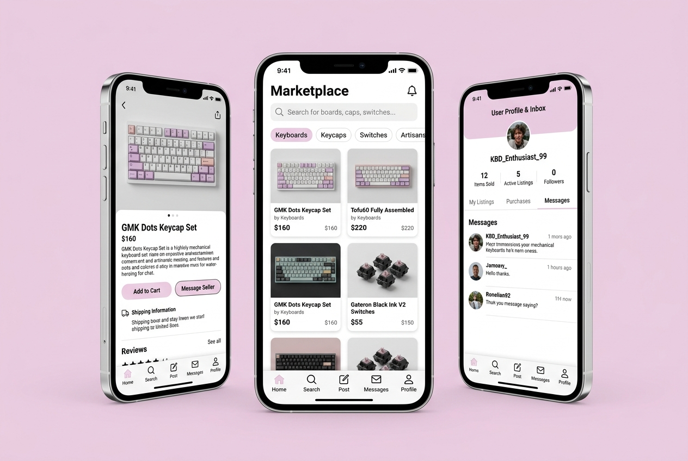
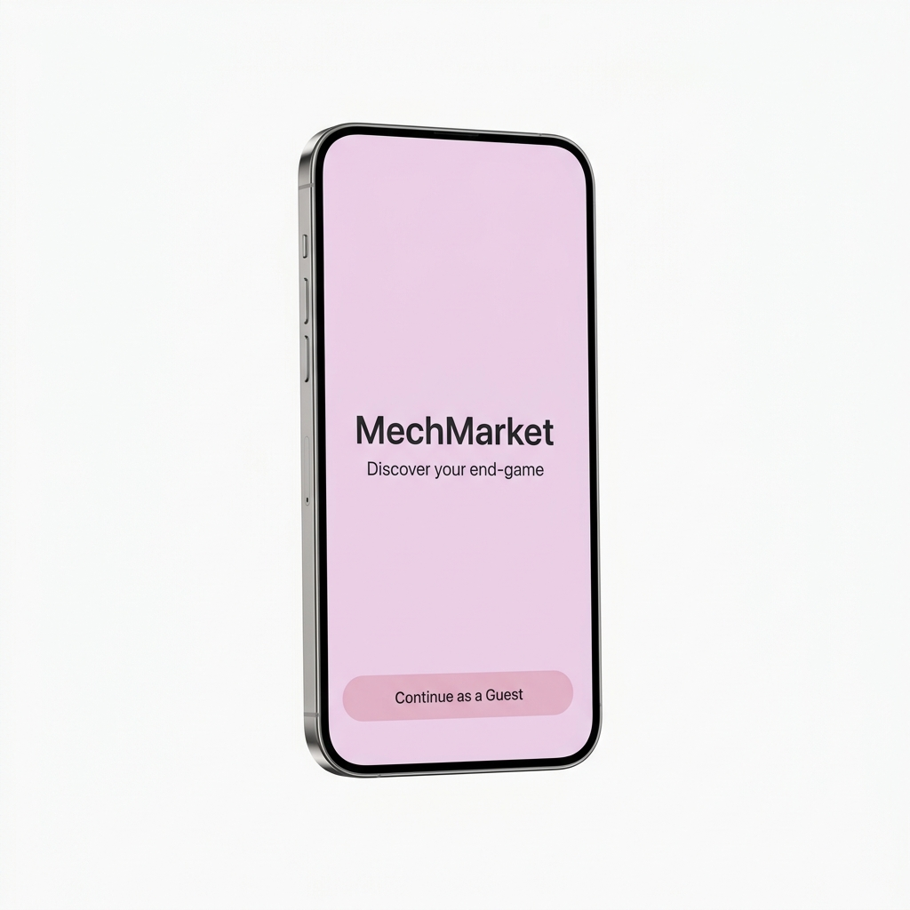
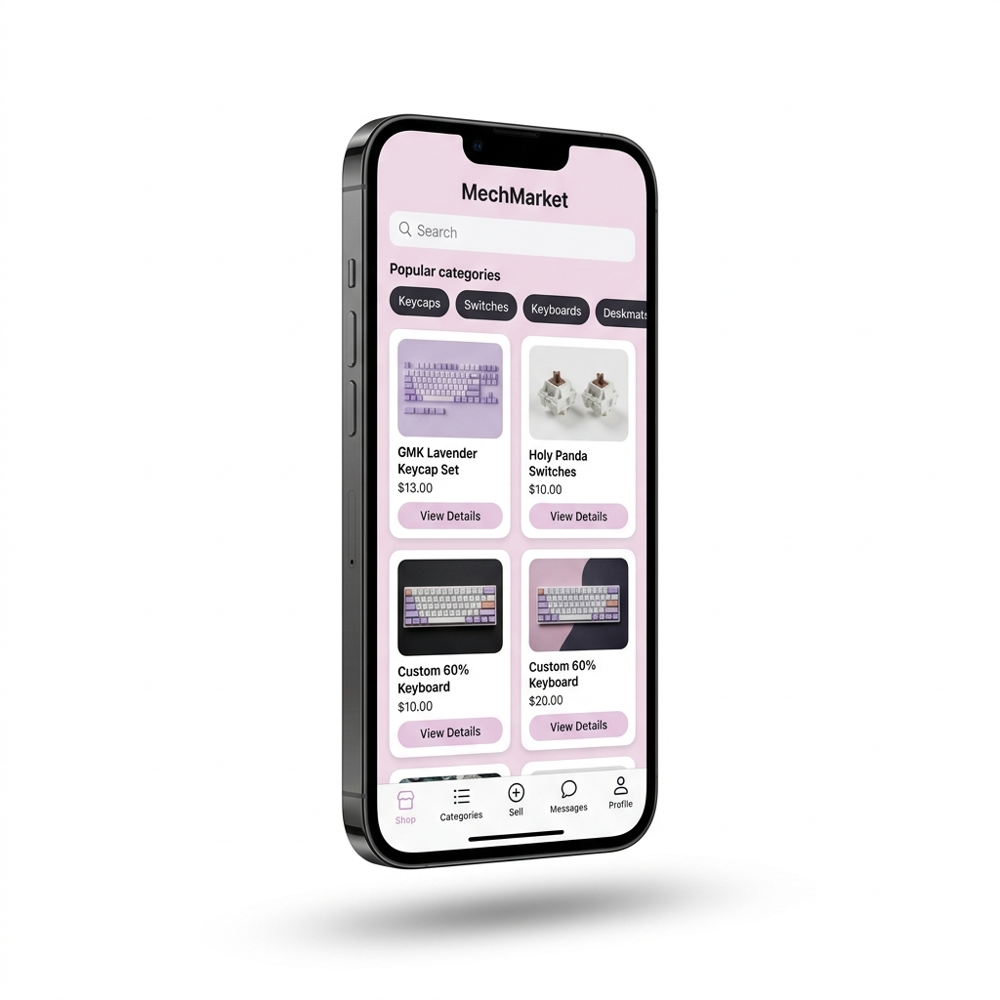
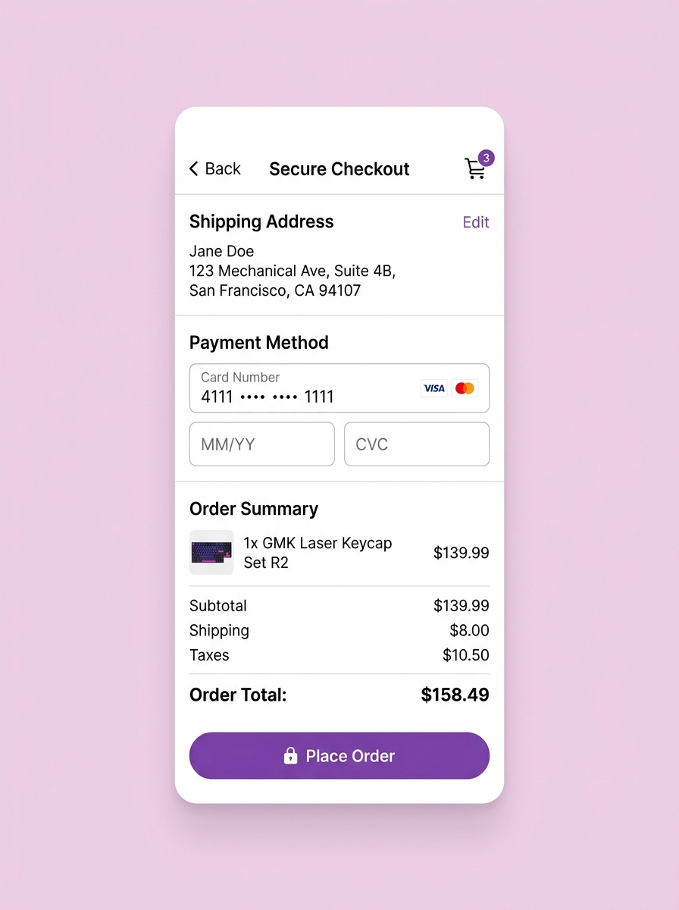
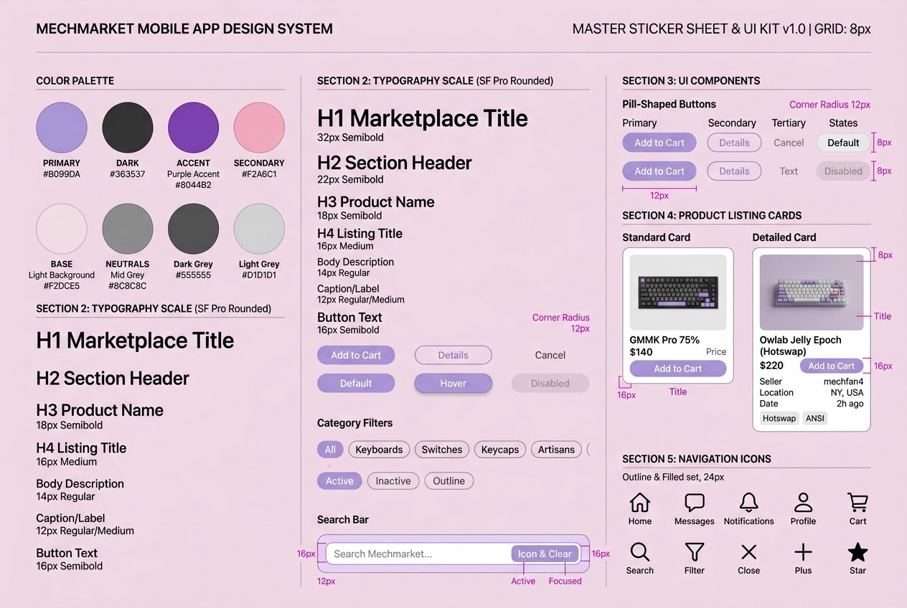

mechmarket
What's your end-game?

Project Vision
Mechmarket is an international shopping app for keyboard enthusiasts alike. For this project, we decided to use a goal-directed design method which revolves around focusing on our persona creation and goals. The MVP for this product was developed as a mobile based application rather than being web-based to showcase our mobile design skillset.
Challenges
- Eliminate barrier to entry on application startup
- Design a cohesive interface for familiar and unfamiliar users
- Create a minimalistic UI while keeping products as the focus
- Provide a seamless & linear purchasing experience
Kickoff
In this project, we took a goal-directed design approach that proved to be quite effective in our design efforts. We found qualitative research methods to be the most useful, consisting of a kickoff meeting, literature review, competitive analysis, stakeholder interviews, and most important our persona hypothesis construction. We started out by asking ourselves some initial key questions.
What is the product and who is it for?
What do our primary users need most?
Which users are the most important to the business?
What challenges could we face moving forward?
Who do we see as our biggest competitors?
What literature should we review to familiarize ourselves?
Affinity Mapping & Solution Iteration
We found data from our SME interview to be the most effective understandings we garnered. We then used an affinity diagram to separate the data into groups of tasks which were further categorized by high level goals for improvement in efficiency, process, depth, and familiarity. Recognizing the conflicts of interest from each audience allowed us to focus on shaping user goals and how those goals would in-turn also affect the business' goals.
Module A: Affinity Map
Module B: Possible Solution Iterations
Meet the Users
Leo
Leo loves when customers ask about his keyboard because he gets to share his unique build. Mechmarket allows him to express his creativity through the app, share with other enthusiasts, and find niche parts and exclusive deals.
Sofia
Sofia is a university student who enjoys solving complex problems through design. She wants her workstation to reflect her aesthetic values, providing functionality that won't distract her from her intensive school work.
Marcus
When Marcus isn't at work, he is first a family man. He loves spending time with his children and needs a seamless way to purchase keyboard parts they have been wanting without getting lost in an overly complex purchasing flow.
Competitive Analysis
We evaluated several potential competitors. While none compete directly with Mechmarket, they influence market revenue and popularity. Mechmarket has the opportunity to capitalize on these gaps by curating a one-stop shop without oversaturating the user's selection.
The majority of features across competitors were similar; however, we identified the following key differentiators:
- Easily Accessible vs. Hardly Accessible
- Too Many Screens vs. Simplified Interaction
- Bright/Distracting Interface vs. Minimalistic Interface
- Specialization of Products
Preparing the Journey
We constructed a user flow of what a basic start to finish journey looks like while purchasing an item. This helps us in understanding ways users can interact with the product, as well as allowing us to see navigation through user goals.
Wireflow
After sketching out some pen & paper wireframes and thinking through the preliminary flow, we reviewed what was necessary, unnecessary, and what areas needed improvement. We poured a lot of our time into this step to make sure we had the finishing touches on the underlying UX before moving onto the visuals.
"The discover page is a way for users to find cool builds that other users have posted."
"The search screen allows users to find items without the hassle of filtering through the home screen."
"The filter screen allows for users who desire a more specific selection to narrow down the results."
Iteration
After developing our initial prototype, we conducted usability testing with 16 participants via a structured 16-question survey. This qualitative feedback provided the necessary insights to refine our core interactions and address critical UX friction points.
Trust Indicators
Users expressed security concerns when purchasing high-value items. We identified a need for visible 'certified seller' badges to build user trust.
Checkout Friction
The 'add to cart' and 'checkout' flows required excessive taps. We streamlined these actions to reduce interaction friction.
Navigational Ambiguity
The visual similarity between the 'Home' and 'Trending' screens caused user confusion. We redesigned the layouts to ensure clear screen differentiation.
Interaction Design
We moved away from standard dropdown menus, opting for more efficient, modern interaction patterns to keep the buying process quick and simple.
High-Fidelity Polish
Based on our usability insights, we iterated on the core shopping and product views to reduce navigational ambiguity and enhance purchase confidence.
Module A: Home Screen Navigation
We replaced the search-dominant header with a clear 'New vs. Trending' tab system. This eliminated the navigational ambiguity that caused users to lose their place on the screen.
Module B: Product Detail Page (PDP)
We added a product image gallery and a 'Sold by' verification badge to build user trust. We also redesigned the purchase footer, consolidating 'Buy New' and 'Buy Used' into a single, high-contrast action bar to streamline the purchasing flow.
Design Challenges & Solutions
Challenge 1: Eliminating Barriers
A key factor when trying to gain a userbase is to create a splash screen void of conflict. If the user wishes to browse the items within the app before creating an account, they might be more inclined to create one later on. Along with the login and register options, the 'continue as guest' option allows users to browse the app without an account.

Challenge 2: A Familiar Experience
While Mechmarket’s primary audience consists of keyboard enthusiasts, the app must remain accessible to users outside this arena. By utilizing recognizable iconography, intuitive gestures, and a linear purchase process, we ensured that Mechmarket offers an intuitive experience for every user.
Challenge 3: Staying Focused
The UI utilizes a neutral, two-toned black and white color scheme, with green accents used exclusively for key signifiers. By using color sparingly, the interface remains calm, ensuring the product imagery remains the clear focus during user engagement.

Challenge 4: Quick, Simple, & Secure
By consolidating payment and shipping details into a single screen, we eliminated user doubt during the final purchase stage. This design choice minimizes screen count and facilitates a faster, more secure checkout experience.

Design System
To maintain visual consistency and support a unified brand experience, we developed a comprehensive Design System. This sticker sheet establishes our core color palette (Light Lavender, Dark Charcoal, Purple Accent, Blush/Pink), typography scale (SF Pro Rounded hierarchy), pill-shaped components, interactive category filters, standardized keyboard product listing cards, and bottom navigation/header iconography sets.

Marketing & App Showcase
Explore the Mechmarket mobile application experience through our curated, high-fidelity 3D marketing mockups. This carousel demonstrates the end-to-end user experience, from brand introduction to checkout flows.
Project Overview
MechMarket is a premium community marketplace dedicated to mechanical keyboard enthusiasts. Designed to simplify keyboard building, discovery, and secure trading, it bridges the gap between fragmented Reddit/Discord communities and a unified mobile commerce platform.
User Research & Empathize
By conducting contextual inquiries and user interviews in mechanical keyboard community groups, I identified that users struggle to find compatible parts (e.g. keycaps, switches, PCBs) and verify seller authenticity due to disjointed catalog systems and scattered review listings.
Information Architecture & User Flow
I structured the app to allow builders to customize keyboard layouts digitally before ordering. The logic-driven catalog dynamically filters switches and keycaps based on selected keyboard sizes (e.g. 60%, 75%, Full-size), preventing administrative compatibility errors.
High-Fidelity UI Design
The interface uses a clean, high-contrast visual style with large typography and borderless cards to let keyboard graphics be the hero. By stripping away visual clutter, users can discover, trade, and build with absolute clarity.
Inclusive Design & Accessibility
To support all hobbyists, I prioritized screen-reader compatibility and large touch targets for switch customization controls, ensuring physical accessibility and WCAG AA contrast compliance across the entire e-commerce flow.
Takeaways
As a mechanical keyboard enthusiast, Mechmarket is a project that is incredibly near and dear to my heart. I wanted to communicate the importance of expressing oneself through different creative outlets. This project marked my first time fully utilizing a goal-directed design process, and I can clearly see its immense value for future work.
Honing in on persona hypothesis creation to balance the goals of both the user and the business is a step I had previously taken for granted. Ultimately, I learned that designing exclusively for business metrics without prioritizing user needs leads to failure—a reality that is especially true for modern e-commerce applications.